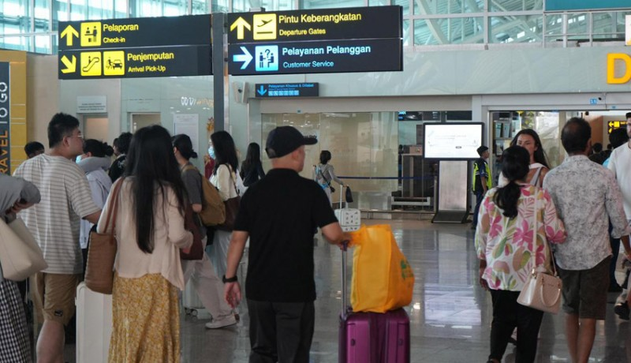

Keberangkatan Siswa ke Jepang
15-09-2025
Siswa LPK Circle Goodness memulai perjalanan ke Jepang untuk memulai pelatihan kerja. Ini adalah pencapaian besar setelah melalui proses panjang seleksi, pelatihan bahasa, dan wawancara dengan perusahaan di Jepang.
Kami berharap semua siswa sukses dan membawa nama baik Indonesia selama program kerja di Jepang berlangsung.
Kembali ke Beranda